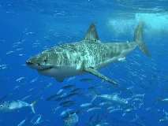
Requin blancwiki-fr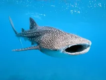
Requin-baleinewiki-fr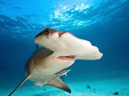
Requin marteauwiki-fr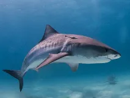
Requin-tigrewiki-fr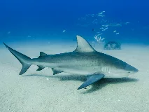
Requin-bouledoguewiki-fr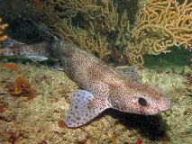
Roussettewiki-fr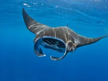
Raie mantabing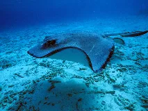
Raie pastenaguewiki-fr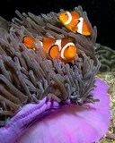
Poisson-clownbing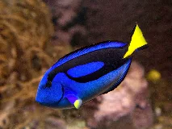
Poisson-chirurgienwiki-fr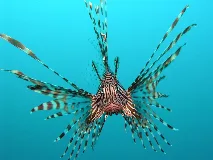
Poisson-lionwiki-fr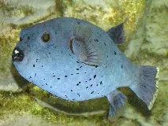
Poisson-globewiki-fr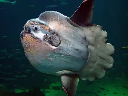
Poisson lunewiki-fr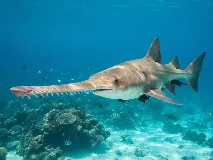
Poisson-sciewiki-fr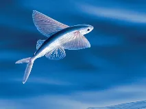
Poisson volantwiki-fr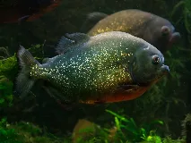
Piranhawiki-fr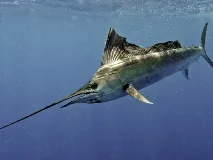
Espadonwiki-fr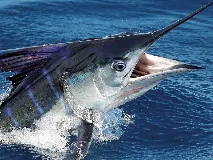
Marlinwiki-fr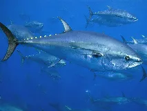
Thon rougewiki-fr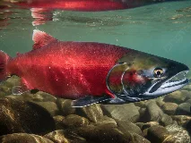
Saumon atlantiquewiki-fr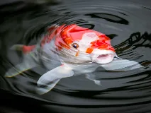
Carpe koiwiki-fr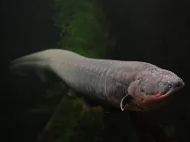
Anguille électriquewiki-fr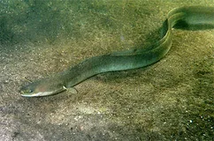
Anguille communebing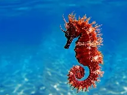
Hippocampewiki-fr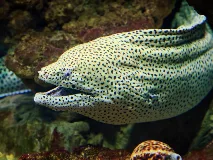
Murenewiki-fr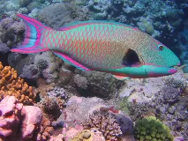
Poisson-perroquetwiki-fr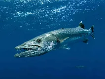
Barracudawiki-fr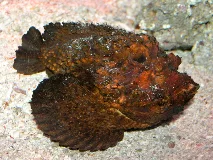
Poisson-pierrewiki-fr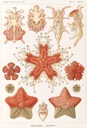
Étoile de merbing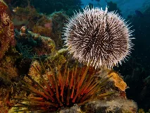
Oursinwiki-fr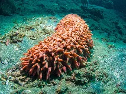
Concombre de merwiki-fr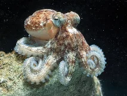
Pieuvre communewiki-fr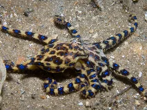
Pieuvre à anneaux bleuswiki-fr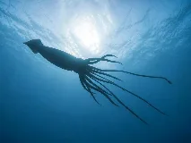
Calamar géantwiki-fr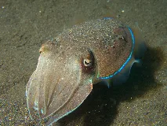
Seichewiki-fr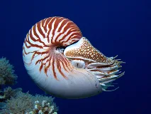
Nautilewiki-fr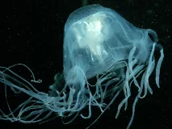
Méduse-boîtewiki-fr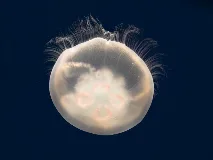
Méduse lunewiki-fr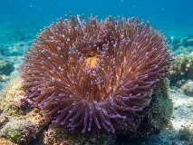
Anémone de merwiki-fr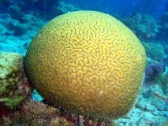
Corail cerveauwiki-fr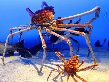
Crabe-araignée géant du Japonwiki-fr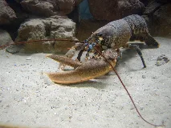
Homardwiki-fr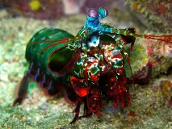
Crevette-mantewiki-fr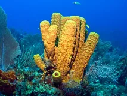
Éponge de merwiki-fr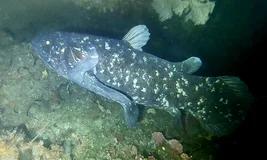
Cœlacanthewiki-fr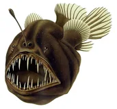
Baudroie abyssalewiki-fr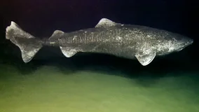
Requin du Groenlandwiki-fr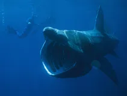
Requin pèlerinwiki-fr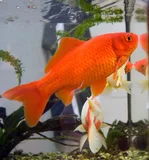
Poisson rougewiki-fr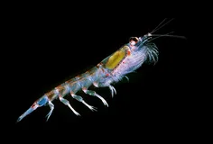
Krillwiki-fr